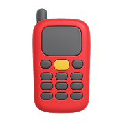
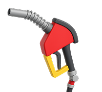
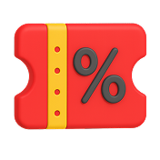
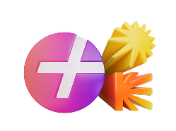

Как участвовать в розыгрыше?
Скачайте
мобильное приложение «Нефтьмагистраль»
Совершите покупку
или заправьтесь на АЗС с картой лояльности
Найдите
в приложении промокод от Яндекс Плюса
Активируйте промокод
и получите до 30 дней мультиподписки и/или опции
Участвуйте
в розыгрыше ценных призов
Что можно выиграть?
Годовой Яндекс Плюс
3000 баллов Плюса
5000 баллов Плюса
Главный приз — 150 000 ₽
Яндекс Станция Лайт
ЯНДЕКС ПЛЮС — ЭТО МУЛЬТИПОДПИСКА ДЛЯ 4 ЧЕЛОВЕК
Кинопоиск
Эксклюзивные премьеры, фильмы и сериалы, мультфильмы, спорт и телеканалы
Яндекс Музыка
Самая точная система музыкальных рекомендаций Моя волна*, подкасты и аудиокниги
Яндекс Книги
Книги, аудиокниги и комиксы. Можно читать, слушать или переключаться между форматами и устройствами
* По степени точности подбора персональных рекомендаций для пользователей в РФ среди музыкальных стриминговых сервисов в апреле 2025 года. Основано на данных ООО «Майл дата» по результатам опроса на базе Единой панели данных
Победители

Fiv....haf@gmail.com
Промокод на 360 дней мультиподподписки Яндекс Плюс
Fiv....haf@gmail.com
Промокод на 360 дней мультиподписки Яндекс Плюс
Fiv....haf@gmail.com
Промокод на 360 дней мультиподписки Яндекс Плюс
Fiv....haf@gmail.com
Промокод на 360 дней мультиподписки Яндекс Плюс
Fiv....haf@gmail.com
Промокод на 360 дней мультиподписки Яндекс Плюс
Fiv....haf@gmail.com
Промокод на 360 дней мультиподписки Яндекс Плюс
Победители розыгрыша
будут определены до 31.12.2025 г.
Вопросы и ответы
Кто может принять участие в акции?
Участником может являться только гражданин Российской Федерации, дееспособное лицо, действующее в собственных интересах, достигшее возраста 18 (восемнадцати) лет, постоянно проживающее на территории Российской Федерации. Участниками не могут быть сотрудники организатора и партнёров, члены их семей, а также работники других юридических лиц и/или индивидуальных предпринимателей, причастных к проведению акции, и члены их семей.
Какие сроки проведения акции?
Общий срок проведения акции: с 21 октября 2025 года по 31 января 2026 года, включая период вручения призов победителям. При этом регистрация промокодов для участия в розыгрыше призов, осуществляется участниками в период с 21 октября 2025 года по 21 декабря 2025 года.
Порядок определения победителей в розыгрышах: Определение обладателя главного приза до 31 декабря 2025 года, вручение главного приза до 31 января 2026 года.
Розыгрыш негарантированных призов:
С 25 декабря 2025 года по 31 декабря 2025 года для промокодов, зарегистрированных с 21 октября 2025 года по 21 декабря 2025 года (включительно).
Что нужно сделать, чтобы принять участие в акции?
Чтобы стать участником акции, в том числе участвовать в розыгрыше негарантированных призов, необходимо:
1. Совершить покупку или заправиться в сети АЗС «Нефтьмагистраль» с применением программы лояльности;
2. Получить промокод от Яндекс Плюса в мобильном приложении сети АЗС «Нефтьмагистраль» в разделе «Подарки и накопления»;
3. Активировать промокод на сайте активации;
4. Авторизоваться или зарегистрироваться в Яндексе с использованием логина и пароля;
5. Подключить мультиподписку Яндекс Плюс и/или одну из опций, следуя инструкции на экране.
В случае выявления аккаунтов-дубликатов в Яндекс ID, принадлежащих одному участнику, организатор вправе отказать во вручении приза.
Как узнать победителей розыгрыша?
Список победителей будет опубликован на сайте акции в разделе «Победители розыгрыша призов».
Как и в какой срок можно получить выигранный приз?
Вручение призов победителям осуществляется в течение 45 дней с даты публикации списка победителей на сайте акции. Призы отправляются победителям с помощью курьерской или почтовой службы по адресу, указанному в электронном письме организатору. Нефизические призы будут отправлены на электронный адрес победителя. Более подробную информацию по поводу получения призов можно посмотреть в правилах акции.
Привязывать свою карту при активации промокода обязательно?
Да, это обязательно. Перед этим проверьте, что вы правильно ввели данные своей карты, срок действия карты не истёк и на счёте есть минимум 11 ₽ — эта сумма списывается для проверки карты, но сразу же возвращается.
Какие преимущества даёт Яндекс Плюс?
Яндекс Плюс — это мультиподписка для 4 человек, которая открывает доступ к развлекательным сервисам:
Яндекс Музыка, Кинопоиск и Яндекс Книги. Также подписчикам Плюса доступны дополнительные возможности в сервисах Яндекса:
— подключение опций с дополнительным контентом и преимуществами
— больше возможностей в программе лояльности Яндекса Свои Плюсы
— возможность тратить баллы Плюса в сервисах Яндекса
— Навигатор в CarPlay и Android Auto. Стройте маршруты в Яндекс Картах или Навигаторе
прямо на экране автомобиля
Как узнать, когда закончится пробный период мультиподписки Яндекс Плюс?
Зайдите на сайт https://plus.yandex.ru и войдите в свой аккаунт на Яндексе, если не сделали этого ранее. Кликните в раздел «Меню» и выберите пункт «Управлять мудьтиподпиской». На открывшейся странице вы увидите статус вашей пробной мультиподписки Яндекс Плюс и дату её окончания.
Обратная связь
Срок акции с 21 октября 2025 года по 31 января 2026 года, срок активации кода для участия в акции 21 декабря 2025 года. Промокод на Подписку Яндекс Плюс и Дополнительную опцию могут активировать пользователи, не имеющие активную мультиподписку Яндекс Плюс (или иную, её включающую). Условия и ограничения. Правила: clck.ru/3PY8nq Мультиподписка (399 руб./мес.) и Доп. опции «Покупки с Пакетом от Х5», «Путешественникам», «Детям», (200 руб./мес.), «Алиса Про». (100 руб./мес.) предоставляются с автопродлением; требуется указание данных банковской карты. Использование дополнительной опции «Путешественникам» возможно только при условии привязки аккаунта S7 к учётной записи на Яндексе — авторизуйтесь или зарегистрируйтесь по ссылке: https://plus.yandex.ru/travel?s7-auth-redirect=1. Условия Мультиподписки: ya.cc/plus_conditions. Описание Доп. опций: ya.cc/opzii. Подробнее о выгоде с Пэй на yandex.ru/legal/rulespluspay/. Условия программы лояльности «Яндекс Плюс Кешбэк»:https://yandex.ru/legal/plus_loyalty. Условия использования сервиса Яндекс Музыка» https://yandex.ru/legal/music_termsofuse. Для получения и использования баллов требуется активная мультиподписка Яндекс Плюс (или иная подписка, её включающая). Баллы не являются денежными средствами, при использовании баллов предоставляется скидка. Цвет призов может отличаться от изображений, представленных на баннере.
Организатором акции является ООО "Серенити Медиа"
Участвуя в акции, вы соглашаетесь на обработку персональных данных, в т.ч. ООО "Серенити Медиа".